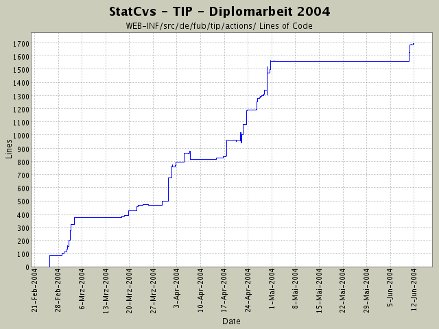

Summary Period: 2004-02-25 to 2004-06-11
[root]/WEB-INF/src/de/fub/tip/actions
 admin
(4 files, 384 lines)
admin
(4 files, 384 lines)
 debug
(2 files, 142 lines)
debug
(2 files, 142 lines)

Total Lines Of Code:
1696 (2004-06-13 13:05)
| Author | Changes | Lines of Code | Lines per Change |
|---|---|---|---|
| hirsch | 182 (100.0%) | 3171 (100.0%) | 17.4 |
weitere Suche nach Exception - Parametertransport klappt in Action,
jetzt fehlen Verweise in information.jsp -.... mal sehn.
2 lines of code changed in:
immer noch auf der Suche nach der NullPointerException
2 lines of code changed in:
Gucken, ob SightVO korrekt weitergegeben wird.
2 lines of code changed in:
Anzeige der Sehenswürdigkeit verfeinert -
NullPointerException kam beim Logging ....
2 lines of code changed in:
Die Sehenswürdigkeit, zu der Infos angezeigt werden, wird jetzt als
separates Objekt gespeichert, damit die Ansicht Infos dazu anzeigen kann.
12 lines of code changed in:
Typo
2 lines of code changed in:
URL-Parameter lässt sich nur mit
getParameter(name) auslesen!!!
Geht jetzt!
2 lines of code changed in:
Logdatei zeigt, dass der URL-Parameter zur Infoanzeige nicht richtig ausgelesen wird. Debuggingausgaben und Korrektur in Action-Klasse
6 lines of code changed in:
weitere Anpassungen der Logik der Informationsanzeige - erster Test
61 lines of code changed in:
Fehler war, dass in der Action der Container falsch gespeichert wurde!
2 lines of code changed in:
SELECT angepasst und Debuggingausgabe hinzugefügt
1 lines of code changed in:
Informationsanzeige: Klassenrümpfe erstellt und in Config eingebunden.
EclipseProbleme (100 %CPU) bleiben wieder.
57 lines of code changed in:
Umgebungsanzeige so verändert, dass zusätzlich die Bilder der
Sehenswürdigkeiten mit geladen werden.
Dazu Anpassungen in der Logikkomponenten und der View!
Ansonsten Kosmetik an Javadoc und Zeilenumbrüchen.
16 lines of code changed in:
Javadoc und SightVO rausgenommen, da unnötig
1 lines of code changed in:
jetzt wird ein Bild angezeigt, wenn der eingegebene Ort in der
Datenbank gefunden wird.
Dazu die Datenstruktur umgebaut und das Bild mit in das LocationVO
reingepackt. Ist sauberer als ein SightVO zu nehmen, da man die Anzeigen nicht wirklich haben möchte, die in einem SightVO mit drinstecken
(verbraucht auch zu viel sinnloisen Speicherplatz)
5 lines of code changed in:
leere Selektion wird jetzt in Action und Logik gesondert behandelt und
sollte keine NullPointerException mehr auslösen!
16 lines of code changed in:
Wenn die Menge der selektierten teile leer ist (a) Fehler, b) User will nix) wird
ein Fehler gemeldet - das ist jetzt raus!
14 lines of code changed in:
CreateUser auf Transaktion umgestellt, da jetzt zusätzlich noch ein
Benutzerprofil angelegt wird (Tabelle profile in DB)
10 lines of code changed in:
ActionRefatcoring:
alle lokalen Variablen entfernt, jetzt ist nur noch der Logger einer Action und Ihre
DataSource als lokale Variable vorhanden. Der Rest ist jeweils methodenlokal!
Anpassen der Javadoc-Kommentare in ThemenBearbeiter und SightGruppenBearbeiter.
31 lines of code changed in:
Einbau der ThemenBearbeiterLogik,
kleiner Fehler in Javadoc und Kommentaren bei SightGruppenAnzeige ausgemerzt,
HTML-Seiten angepasst,
ResourceBundle-Inahlte erstellt und eingebaut.
130 lines of code changed in:
(114 more)
Generated by StatCvs v0.2-dev